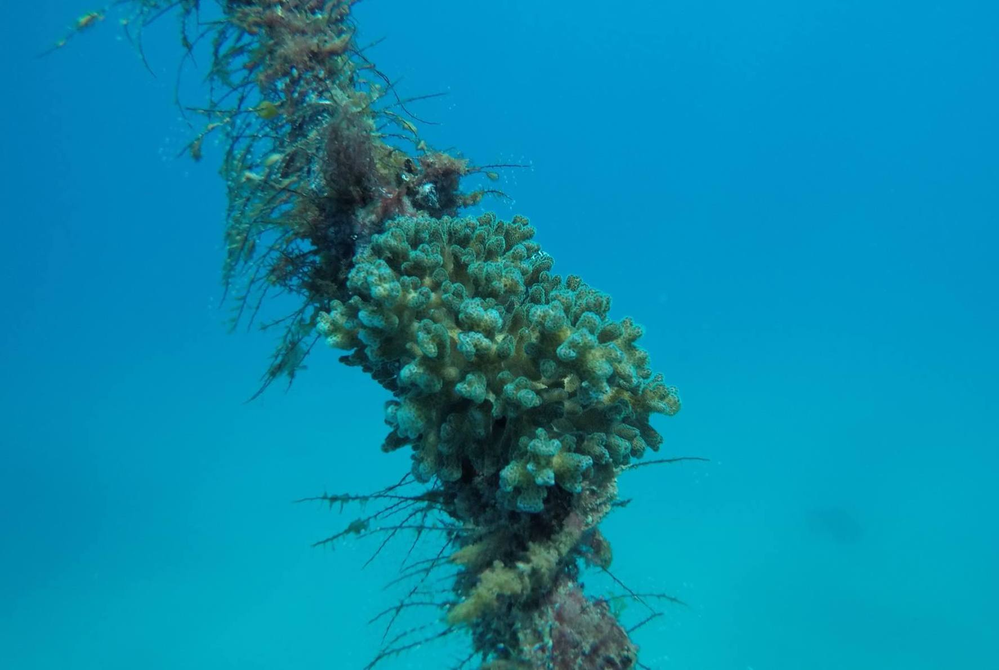

Conference Presentations
3rd Joint Congress on Evolutionary Biology, July 2024
Evolution 2024Smithsonian Tropical Microbial Ecology Symposium, May 2021
STRI 2021
Public Audience Presentations
Smithsonian Science Cafe, May 2022
SI 2022Subtropical Experiments: Corals Above and Below, July 2020
WLRN 20203-Minute Thesis, March 2020
3MT 2020

Pocillopora corals are
resilient. Pocillopora acuta colony growing on a
mooring line near Houbihu harbor in Kenting, Taiwan.